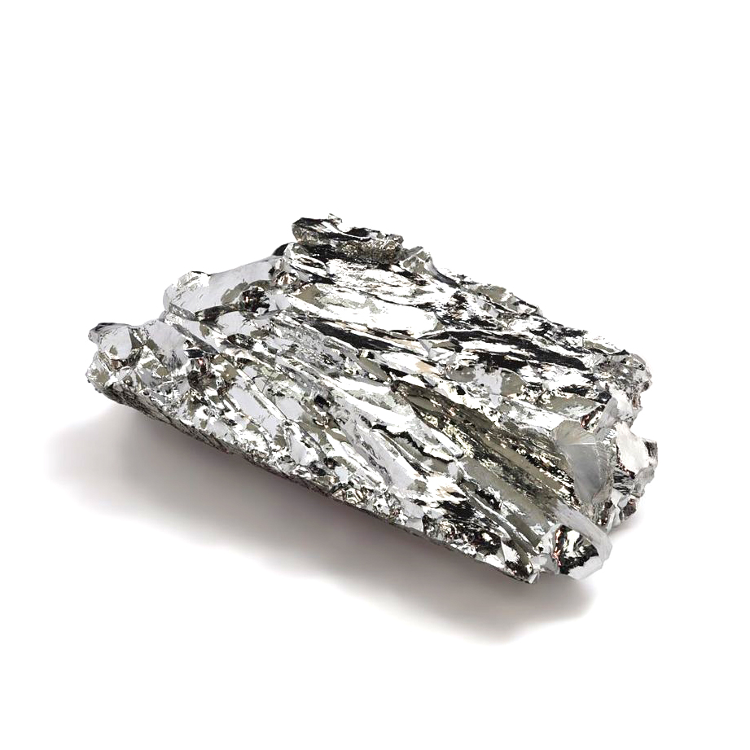

Эрбий
Э́рбий (химический символ — Er; лат. Erbium) — химический элемент 3-й группы (по устаревшей классификации — побочной подгруппы третьей группы, IIIB) шестого периода периодической системы химических элементов Д. И. Менделеева, с атомным номером 68.Относится к семейству лантаноидов. Простое вещество эрбий — это мягкий редкоземельный металл серебристого цвета.

Впервые эрбий был выделен в 1843 году шведским химиком Карлом Густавом Мосандром из минерала гадолинита, найденного около селения Иттербю. Мосандер обнаружил примеси в концентрате Y2O3 и выделил из него три фракции: иттриевую, розовую «terbia» (которая содержала современный элемент эрбий) и бесцветную «erbia» (содержала элемент тербий, нерастворимый оксид тербия имеет коричневый оттенок). Тербий и эрбий некоторое время путали. Тербий был переименован в эрбий после 1860 года, а эрбий в тербий — в 1877 году.
Получают ионным обменом при переработке нитратных растворов ксенотима и эвксенита. Производятся нитраты, хлориды, фториды, ацетаты. Металл получают кальциетермическим восстановлением ErF3. Ионы Er3+ придают соединениям розовую окраску и обладают свойствами генерировать лазерное излучение. Эрбий применяют в лазерной медицине, как добавку в регулирующие стержни для поглощения нейтронов, сплавы ванадия, стёкла, эмали и фильтры в фотографии.